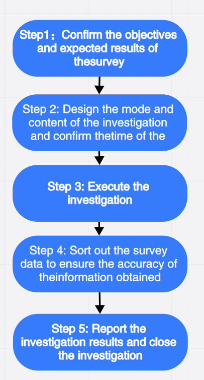

Step 1: Confirm the objectives and expected results of the survey
Step 2: Design the mode and content of the investigation and confirm the time of the investigation
Step 3: Execute the investigation
Step 4: Sort out the survey data to ensure the accuracy of the information obtained
Step 5: Report the investigation results and close the investigation
